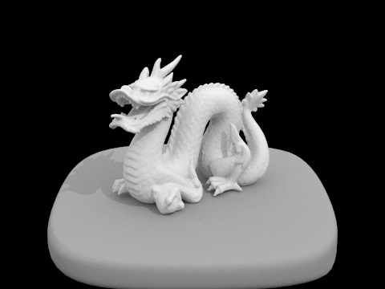

The rendering pipeline works as follows, we raytrace tiles of the scene in which we generate our camera rays which we get the radiance for those rays.
Then, inside of our est_randiance_global illumination, this is where we handle the our primitive intersections are handled and optimization using bvh. To get the illumination, we have to add both the zero bounce and one bounce radiance to render our scene/image.
For the triangle intersection algorithm, I used the Molle Trumbore Algorithm which is a optimized algorith for finding triangle intersections. To implement this, I first compute all the components needed for the algorithm such as the subtractions, cross products, dot products.
Then, I created the 3D vector for S2 (dot) E2, S1 (dot) S, S2 (dot) D. Then I multiply it with the scalar (1/ S1 (dot) E1). To get the b3 value, we have to do 1 - b1 - b2 which will give us our barycentric coordinates.
cow.daebeast.daeteapot.dae
Part 2: Bounding Volume Hierarchy
For my BVH algorithm, I decided to first find the largest axis using .extent and then get the midpoint of that axis. Then, I split the primitives that are smaller than the midpoint to go into the left child, and the others go into the right child.
We only split if the number of primitives are greater than the max_leaf_size.
When we run pathtracer on bunny.dae, without BVH, we were able to render it in 316s using our computer. In comparison using BVH, we got 0.196 seconds to render the image.
We ran pathtracer on CBDragon without BVH, we got a total of ~2000s to render. Meanwhile, we got 0.1554s seconds with our BVH optimization. Similarly, for the bench, we got 700 seconds to render without BVH.
With BVH, we got 0.1497s to render the file bench.dae. We see that using BVH significantly speed up our rendering process.
BunnyBenchCBDragon
Part 3: Direct illumination
For the hemisphere estimation, we looped through the number of samples, and we get a sample from our hemisphereSampler and we need to switch coordinate system thus, we have to multiply our sample with o2w. Then, we can construct our direciton adn origin for our new ray using
our sampled vector. Then, we check for intersection with out bvh if there is an intersect, this implies that there is a bounce so we accumlate the sum into L_out following the formula. We normalize at the end before returning.
For the importance sampling, we sample directly from the lights which we can get from the function scene->lights. We can get the radiance using sample_L as well as the sampled vector. Then, we use similar as the hemisphere algorithm where we transform to a different coordinate system and create a new ray with the
sampled vector. Since we are sampling lights, we want to ignore intersections since we want to know whether the source has a direct hit point. Then we accumulate reflected light into L_out and divide by the pdf. Then, we normalize by the num_samples.
We found that using hemisphere estimation, it created noisy images but as we increase the sample size, we reduce the noise. In comparison, using light sampling for our direct illumination, we see that we get a less noisy
image when we run on the same sample size as hemisphere. So, we see that in our case, using light sampling is more efficient since we don't have to scale up our sample size to eliminate noise in hemisphere estimation.
Bunny with hemisphere samplingBunny with light samplingCBGems with hemisphere samplingCBGems with light samplingCBBunny with light sampling 1 light ray 1 sample rateCBGems with light sampling 4 light ray 1 sample rategCBGems with light sampling 16 light ray 1 sample rateCBGems with light sampling 64 light ray 1 sample rate
Part 4: Global illumination
First, we get a sample vector using sample_f. Then, we want to generate the probability for russian roullete according to the hint of (0.4 or 0.3).
The base case is that we only use russian roullete when we are using direct illumination which is when max_ray_depth <=1. Otherwise, we want to continue bouncing until the ray's depth is 1 or 0.
We create a new ray similar to the previous part and check whether or not that ray intersect our scene. If so, there must be a bounce so we recurse. If no bounce then we can simply return L_out.
CBSphereCBbunny

dragonwith indirect illumination m = 0with direct illumination m = 5CBbunny m = 0 sample 1024CBbunny m = 1 sample 1024CBbunny m = 2 sample 1024CBbunny m = 3 sample 1024CBbunny m = 100 sample 1024Blob sample size 1Blob sample size 2Blob sample size 4Blob sample size 8Blob sample size 16Blob sample size 64Blob sample size 1024
Part 5 Adaptive Sampling
For my adaptive sampling pixel sampling, we first check if the number of samples is 1, if it is we simply generate a new ray at middle of the pixeland call est_radiance_global_illumination.
Then, we update the pixel. if number of samples is more than one, we have to iteratively sample and we only check if we converged if we have processed samplesPerBatch. On each iteration, we generate a random sample and
create a ray with that sample as the offset into our pixel. Then, we estimate the radiance using est_radiance_global_illumination, and accumulate it in our result. Then, we populate s1 and s2 with the illum and illum^2.
Once we converged, we update the sampleBuffer with result/ n where n is the number of samples we've processed and update the sampleCountBuffer to n.
Bunny with 2048 samples per pixel, 1 sample per light 5 max ray depthHeatmap